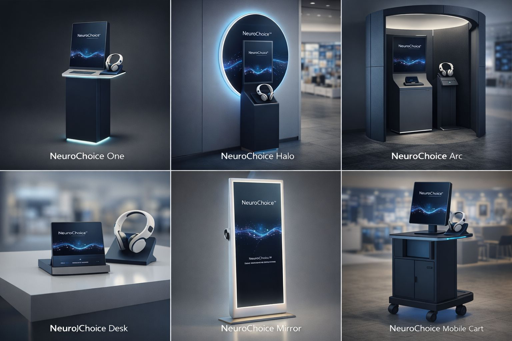

A pilot‑ready neural decision experience for luxury retail.
NeuroChoice™ is a patent‑pending in‑store decision concept: customers compare products, run a short guided session, and receive a ranked recommendation with confidence — designed for high-consideration purchases.
About NeuroChoice™
NeuroChoice™ builds in-store decision infrastructure that helps shoppers choose with confidence when options are complex. The system combines a retail-friendly kiosk workflow with dry-EEG readiness and a short P300-style session to produce a ranked recommendation and confidence score — designed for premium retail environments.
What we deliver
Branded kiosks + software that retailers can deploy quickly, with offline catalog tools and staff-assisted or self-service flows.
How we work
Hardware-agnostic integrations (OpenBCI, Emotiv, LSL/Muse and OEM headsets) via a simple bridge interface.
Where it fits
Luxury and high-consideration categories: watches, jewelry, audio, eyewear, fashion, furniture, and premium electronics.
Ready for pilots
Deploy one kiosk in-store and measure conversion lift, dwell time, and return-rate impact.
Product formats
Choose the right footprint for your store: compact stands, halo walls, private arc booths, desks, mirrors, or mobile carts.
How it works (high‑level)
1) Add items
Staff or customer selects items to compare. Catalog loads offline (USB JSON or QR payload). No cloud needed.
2) Guided session
Images flash in randomized order. Markers align EEG epochs for ERP scoring (P300-style).
3) Rank & recommend
The kiosk displays a winner, runner-up and confidence indicator. Optional session export for staff.
Hardware-ready
NeuroChoice™ supports multiple EEG options through a unified adapter layer.
Contact
Office
NeuroChoice Office 16646 182-184 High Street North East Ham London E6 2JA
For pilots, partnerships, or OEM manufacturing inquiries, email us with your store category and preferred kiosk format.